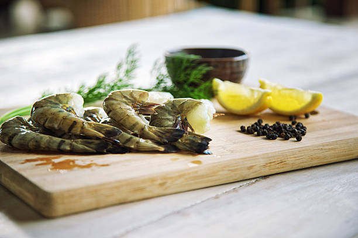
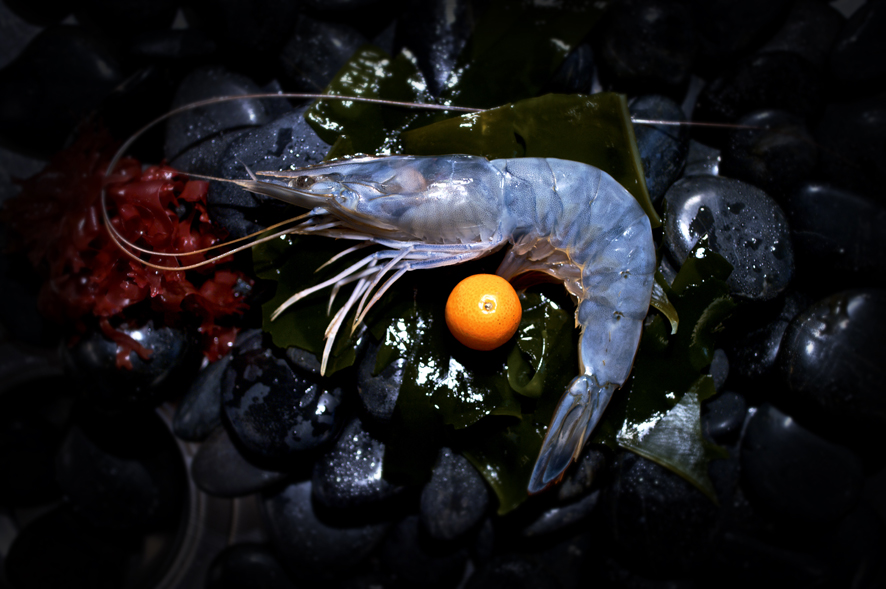
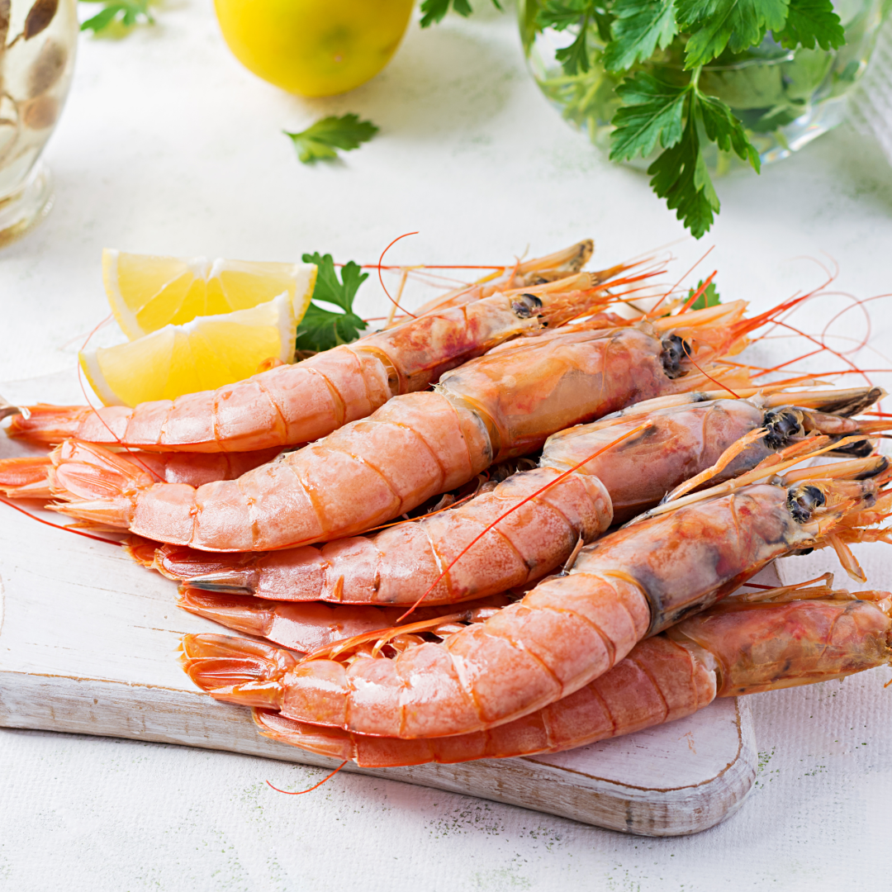
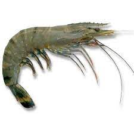
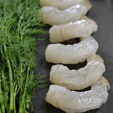
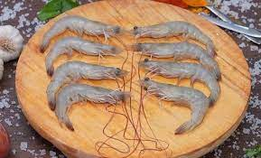
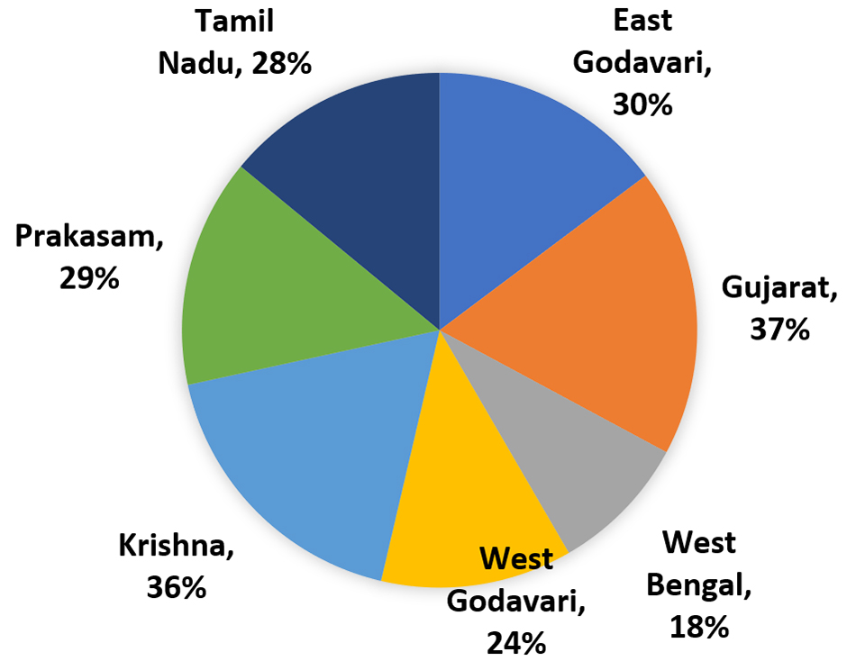

<?php 
$page = "home";

	include("include/header.php");

?>
    <style>
    .center {
  margin: 0 auto;
}

.awesome {
  font-family: futura;
  font-style: italic;
  width: 100%;
  margin: 0 auto;
  text-align: center;
  color: #313131;
  font-size: auto;
  font-weight: bold;
  position: absolute;
  -webkit-animation: colorchange 20s infinite alternate;
}

@-webkit-keyframes colorchange {
  0% {
    color: black;
  }
  10% {
    color: #ff6f61;
  }
  20% {
    color: #1abc9c;
  }
  30% {
    color: #d35400;
  }
  40% {
    color: black;
  }
  50% {
    color: #34495e;
  }
  60% {
    color: #1a0200;
  }
  70% {
    color: #2980b9;
  }
  80% {
    color: #f1c40f;
  }
  90% {
    color: #2980b9;
  }
  100% {
    color: pink;
  }
}
</style>
      <!-- ---- HOME SLIDER ----- -->
        <section class="slider-container">
            <div class="slider-grid-3">
                <ul>
                    <!-- SLIDE 1 -->
                    <li data-transition="random" data-slotamount="7" data-masterspeed="500" data-saveperformance="on" data-title="Aditya Aqua">

                        <!-- MAIN IMAGE -->
                        

                        <!-- LAYER NR. 1 -->

                        <div class="tp-caption tt-slider-title sft" data-x="20" data-y="140" data-speed="1000" data-start="500" data-easing="Power4.easeOut" data-endspeed="300" style="z-index: 999">Welcome To <span class="awesome"><b>Aditya Aqua </b></span> </div>

                        <!-- LAYER NR. 2 -->
                        <div class="tp-caption tt-slider-subtitle sft" data-x="20" data-y="240" data-speed="1000" data-start="700" data-easing="Power4.easeOut" data-endspeed="300" style="z-index: 999">No one surpasses the standards</div>

                        <!-- LAYER NR. 3 -->
                        <div class="tp-caption tt-slider-small-text sft" data-x="20" data-y="310" data-speed="1000" data-start="900" data-easing="Power4.easeOut" data-endspeed="300" style="z-index: 999"><strong style="font-size: 120%;"> At Aditya Aqua,we know the future of our industry relies on sourcing seafood in a socially and environmentally responsible manner. <br>Our Seafood Forever™ program is based on four pillars we view as critical to the long-term health of our people and our planet</strong></div>

                        <!-- LAYER NR. 3 -->
                        <div class="tp-caption sft" data-x="20" data-y="420" data-speed="1000" data-start="1100" data-easing="Power4.easeOut" data-endspeed="300" style="z-index: 999"> <a href="story.php" class="tt-btn btn-default">Read More</a> </div>

                    </li>

                    <!-- SLIDE 2 -->
                    <li data-transition="random" data-slotamount="7" data-masterspeed="500" data-saveperformance="on" data-title="Our Goals">

                        <!-- MAIN IMAGE -->
                        

                        <!-- LAYER NR. 1 -->

                        <div class="tp-caption tt-slider-title sft" data-x="20" data-y="140" data-speed="1000" data-start="500" data-easing="Power4.easeOut" data-endspeed="300" style="z-index: 999">OUR GOAL IS <span> Live Fulfilled</span> </div>

                        <!-- LAYER NR. 2 -->
                        <div class="tp-caption tt-slider-subtitle sft" data-x="20" data-y="240" data-speed="1000" data-start="700" data-easing="Power4.easeOut" data-endspeed="300" style="z-index: 999">Choose That Best Today. </div>

                        <!-- LAYER NR. 3 -->
                        <div class="tp-caption tt-slider-small-text sft" data-x="20" data-y="310" data-speed="1000" data-start="900" data-easing="Power4.easeOut" data-endspeed="300" style="z-index: 999"><strong style="font-size: 120%;"> We buy seafood from various locations around the country. Wherever we acquire from, suppliers must follow to the same standards: <br>they must work to properly collect or grow seafood, guard against overfishing, and minimize environmental consequences.<br> They are also expected to respect high worker safety and social standards and treat their employees well,<br> in accordance with human rights and dignity.</strong></div><br><br>

                        <!-- LAYER NR. 3 -->
                        <div class="tp-caption sft" data-x="20" data-y="500" data-speed="1000" data-start="1100" data-easing="Power4.easeOut" data-endspeed="300" style="z-index: 999"> <a href="goals.php" class="tt-btn btn-default">Read More</a> </div>
                    </li>
					
					   <!-- SLIDE 3 -->
                    <li data-transition="random" data-slotamount="7" data-masterspeed="500" data-saveperformance="on" data-title="Sustainability">

                        <!-- MAIN IMAGE -->
                        

                        <!-- LAYER NR. 1 -->

                        <div class="tp-caption tt-slider-title sft" data-x="20" data-y="90" data-speed="1000" data-start="500" data-easing="Power4.easeOut" data-endspeed="300" style="z-index: 999"><span>Sustainability, Social Responsibility,<br>Traceability, and Food Safety.</span> </div>

                        <!-- LAYER NR. 2 -->
                        <div class="tp-caption tt-slider-subtitle sft" data-x="20" data-y="240" data-speed="1000" data-start="700" data-easing="Power4.easeOut" data-endspeed="300" style="z-index: 999"> </div>

                        <!-- LAYER NR. 3 -->
                        <div class="tp-caption tt-slider-small-text sft" data-x="20" data-y="310" data-speed="1000" data-start="900" data-easing="Power4.easeOut" data-endspeed="300" style="z-index: 999"><strong style="font-size: 120%;"> Because we care about your life.</strong></div>

                        <!-- LAYER NR. 3 -->
                        <div class="tp-caption sft" data-x="20" data-y="420" data-speed="1000" data-start="1100" data-easing="Power4.easeOut" data-endspeed="300" style="z-index: 999"> <a href="sstf.php" class="tt-btn btn-default">Read More</a> </div>
                    </li>
                    <li data-transition="random" data-slotamount="7" data-masterspeed="500" data-saveperformance="on" data-title="Contact Us">

                        <!-- MAIN IMAGE -->
                        

                        <!-- LAYER NR. 1 -->

                        <div class="tp-caption tt-slider-title sft" data-x="20" data-y="140" data-speed="1000" data-start="500" data-easing="Power4.easeOut" data-endspeed="300" style="z-index: 999">Need To <span> Speak With Us ?</span> </div>

                        <!-- LAYER NR. 2 -->
                        <div class="tp-caption tt-slider-subtitle sft" data-x="20" data-y="240" data-speed="1000" data-start="700" data-easing="Power4.easeOut" data-endspeed="300" style="z-index: 999"> Then Wait No Further </div>

                        <!-- LAYER NR. 3 -->
                        <div class="tp-caption tt-slider-small-text sft" data-x="20" data-y="310" data-speed="1000" data-start="900" data-easing="Power4.easeOut" data-endspeed="300" style="z-index: 999">-------------------</div>

                        <!-- LAYER NR. 3 -->
                        <div class="tp-caption sft" data-x="20" data-y="420" data-speed="1000" data-start="1100" data-easing="Power4.easeOut" data-endspeed="300" style="z-index: 999"> <a href="contact.php" class="tt-btn btn-default">Mail Form</a> </div>
                        <div class="tp-caption sft" data-x="190" data-y="420" data-speed="1000" data-start="1100" data-easing="Power4.easeOut" data-endspeed="300" style="z-index: 999"> <a href="tel:+91-123456" class="tt-btn btn-default">Call Us</a> </div>
                    </li>

					
                </ul>
            </div>
        </section>
		
        <section class="blog-posts-section">
        <div class="container">
            <div class="row">
                <div class="col-md-12 col-sm-12 col-xs-12 nopadding">
                    <div class="col-md-12 col-sm-12 col-xs-12">
                        <div class="Heading-title black">
                            <h1>Shirmp Types</h1>
                        </div>
                    </div>
                    <div class="col-md-4 col-sm-6 col-xs-12">
                      <div class="blog-post">
                        <div class="post-img"></div>
                        <h3 class="post-title"> Tiger Shirmp 
                        <p class="post-excerpt" style="font-size:12px; text-align: justify;">Tiger Prawns are most popular for having a bold, sweet taste, while white shrimp have a more delicate flavor. TEXTURE:Tiger Prawns have firm meat that has been described as a “snappy, meaty texture." White Shrimp have a softer texture.</p>
                        </h3>
                      </div>
                    </div>

                    <div class="col-md-4 col-sm-6 col-xs-12">
                      <div class="blog-post">
                        <div class="post-img"> </div>
                        <h3 class="post-title">Peeled Shirmp
                        <p class="post-excerpt" style="font-size:12px;text-align: justify;">Peeled Shrimp is high in several vitamins and minerals, and it's a rich source of protein. Eating Peeled shrimp may also promote heart and brain health due to its content of omega-3 fatty acids and the antioxidant astaxanthin ( 7 ).</p>
                        </h3>
                      </div>
                    </div>

                    <div class="col-md-4 col-sm-6 col-xs-12">
                      <div class="blog-post">
                        <div class="post-img"></div>
                        <h3 class="post-title">Vannamei Shrimp
                        <p class="post-excerpt" style="font-size:12px;text-align: justify;">The ω-9 fatty acids help to reduce the risk of arteriosclerosis, cardiovascular disease and stroke (vannamei contains considerable amounts of PUFA). Based on the results,vannamei species can be considered as a good source of fatty acid as well as protein.</p>
                        </h3>
                      </div>
                    </div>
                </div>
            </div>
        </div>
        </section>  
        
        
		
		    <section class="blog-posts-section">
        <div class="container">
            <div class="row">
                <div class="col-md-12 col-sm-12 col-xs-12 nopadding">
                    <div class="col-md-12 col-sm-12 col-xs-12">
                        <div class="Heading-title black">
                            <h1>Shirmp Recipies</h1>
                            <p>Good shrimp should be treated like a great steak - seasoned simply and cooked just right to let their natural flavor shine</p>
                        </div>
                    </div>
					<?php 
					
						while($row_art = $articles->fetch_assoc()){
							$id = $row_art['id'];
							$name = $row_art['name'];
							$link = "assets/article/";
							$img = $row_art['image'];
							$image = $link.$img;
							$desp = $row_art['description'];
							$date = $row_art['date_added'];
							$main_desp = limit_word($desp, 12);
							?>
							
							<div class="col-md-4 col-sm-6 col-xs-12">
								<div class="blog-post">
									<div class="post-img"> <a href="<?= "article_details.php?id=$id"?>"> " alt="<?= $name; ?>" class="img-responsive"> </a> </div>
									<div class="post-info"> <a href="<?= "article_details.php?id=$id"?>"><?= $date; ?></a> </div>
									<h3 class="post-title"> <a href="<?= "article_details.php?id=$id"?>"> <?= $name; ?> </a> 
                                        <p class="post-excerpt" style="text-align: justify;"><?= $main_desp; ?> </p>
                                    </h3>
									
								</div>
							</div>
							
							<?php
						}
						?>
					
					<div class="col-md-12 col-sm-12 col-xs-12">
                    	<div class="load-more-btn">
                        	<a href="articles.php"><button class="btn-default"> View All <i class="fa fa-angle-right"></i> </button></a>
                        </div>
                    </div>
					
                </div>
            </div>
        </div>
    </section>
		
		<!--
		<section class="call-to-action-1">
            <div class="container">
                <div class="row">
                    <div class="col-md-12 col-sm-12 col-xs-12">
                        <div class="col-md-10 col-sm-10 col-xs-12">
                            <i class="icon-trophy"></i>
                            <div class="heading-detail">
                                <h3 style="font-weight: bold; font-size: 38px;">World Best Online Career Guidance</h3>
                                <p>Building The Right Career is the right path to success..</p>
                            </div>
                        </div>
                        <div class="col-md-2 col-sm-2 col-xs-12">
                            <a class="btn btn-default btn-block" href="#">Sign Up</a>
                        </div>
                    </div>
                </div>
            </div>
        </section> -->

	
	<section class="employe-section" style="">
        <div class="container-fluid">
            <div class="row">
                <div class="col-md-6 col-sm-12 col-xs-12 nopadding">
                    <div class="employe-detail-section">
                        <h5></h5>
                        <h2>Our Goal<br></h2>
                        <p>We buy seafood from various locations around the country. Wherever we acquire from, suppliers must follow to the same standards: they must work to properly collect or grow seafood, guard against overfishing, and minimize environmental consequences. They are also expected to respect high worker safety and social standards and treat their employees well, in accordance with human rights and dignity.</p>
                        <a href="goals.php" class="btn-default btn btn-employe-section">Read More</a> </div>
                </div>
                <div class="col-md-6 col-sm-6 col-xs-12 nopadding hidden-sm">
                    <div class="employe-img-section-left"> </div>
                </div>
            </div>
        </div>
    </section>
	

    <?php include("include/footer.php"); ?>